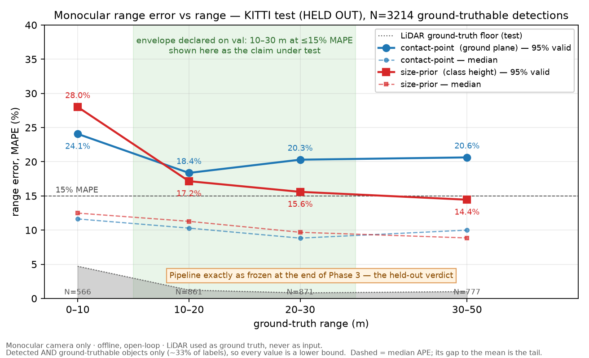

A range estimator, and the ruler built to grade it
Monocular vision cannot measure distance directly — it infers it. This project builds the LiDAR ground-truth harness first, characterises the ruler's own error, and only then measures what a camera-only estimator can honestly claim. A dashboard nobody can falsify is worth less than an error-vs-range curve on a plain background.
The headline claim did not survive held-out data
An operating envelope of 10–30 m at ≤15% error was declared on validation data. Two sequences were held out, never looked at, and never used to choose a parameter. Running the frozen pipeline on them once:
| range bin | 0–10 m | 10–20 m | 20–30 m | 30–50 m |
|---|---|---|---|---|
| validation (declared on) | 22.7% | 10.3% | 11.0% | 15.3% |
| held-out test | 24.1% | 17.2% | 15.6% | 14.4% |
Both bins the claim rested on missed. The far bins improved. This is published as the result rather than repaired into one, and the sections below are the diagnosis — not a walk-back.

The instrument transferred. The failure is not the ground truth.
Test is easier for the detector. It was handed more and better boxes, and still did worse.
The centre transferred; the tail did not. Mean error described a collapse that never happened to the typical object.
What it actually was: ten detections
In the worst 50-frame block, 10 detections out of 199 carried 81% of the summed bias, while the block's median error was −1.54 m. All ten had box bottoms sitting about 4.7 px below the horizon row, where
D = f·h / (vbottom − vhorizon)
divides by almost nothing. The worst returned 253 m for an object at 25.8 m. The guard that should have caught it was a division-by-zero check wearing a validity check's name: it permitted a 398 m answer at 33% range error per pixel of box-edge error.
Three other explanations were tested first and died on measurement: a degraded ruler (no), occlusion (a nearer object was present for 87.9% of outliers and 85.7% of everything else — no discrimination), and the road-slope mechanism that had explained the far-field bias (it predicted −0.65 m against an observed +9.08 m — wrong sign, an order of magnitude short). The dead hypotheses are part of the result.
The near field is a lens limit, not a software bug
The worst range bin was always 0–10 m — on a collision-warning system, the worst
possible place for it. A ground contact point at range D projects to row
cy + f·h/D, which leaves a 375-row image below
Dmin = f·h / (Himg − cy) = 5.91 m
Closer than that, the contact point is not in the picture. The box bottom reaches the frame edge and stops, so range saturates:
| validation | held-out test | |
|---|---|---|
| objects closer than 5.91 m | 261 | 81 |
| over-estimated | 100% | 100% |
| their estimates cluster at | 6.03 m | 6.02 m |
| predicted, nothing fitted | 5.91 m | 5.91 m |
The size-prior estimator fails there too, and slightly worse — which I did not
expect, since D = f·H/h contains no ground plane at all. The same
edge truncates the box height. One boundary, two mechanisms.
A camera mounted 1.655 m up cannot see the wheels of a car four metres in front of it, and no better algorithm recovers that band — a wider lens, a lower mount, or radar does. That is one concrete reason production emergency braking fuses sensors, rather than an abstract one.
Latency, against a measured budget
The budget is not a round number: KITTI's measured frame interval is 103.56 ms (9.657 Hz), not the documented 10 Hz. Apple M2 / MPS, YOLOv8n at 640 px, batch 1, N = 1548 frames, 30 warmup excluded, device synchronised inside every timed region.
| stage | p50 | p95 | p99 | % of budget |
|---|---|---|---|---|
| detect | 17.56 | 25.94 | 38.20 | 36.9% |
| lanes | 11.83 | 17.20 | 25.37 | 24.5% |
| track + range + TTC + decide | 0.33 | 0.65 | 1.09 | 1.1% |
| TOTAL, measured | 29.70 | 42.56 | 59.67 | 57.6% |
It fits at 58%, so no optimisation was done — optimising a stage that already meets its share is theatre, and the decision is on the record so it does not get quietly reopened. Note what the table says about effort: the geometry that took six phases to characterise costs 1.1%.
Percentiles are not additive. Summing the stage p99s gives 64.60 ms against a measured 59.67 — and for the four correlated cheap stages it understates by 5%. There is no safe direction to round in, so the total is always timed. The over-budget frame count is not even reproducible: three identical runs gave 3, 7 and 3 frames over, with a different stage spiking each time. Those are host scheduling stalls, not pipeline work.
Run the pipeline — offline replay
Every frame below was produced by app/replay.py over KITTI
drive_0084, composited by the same code the project
ships. This is replay of measured output, not live inference —
the system is offline and open-loop by design, so there is nothing to stream and
nothing to actuate. Scrub to frame 168 and the warning fires.
| track | class | range | TTC | lateral |
|---|
--means the estimator declined, never a guess- Range outside 20–50 m is withheld and the box dimmed
- TTC is not gated on range — it is measured separately and is unbiased under 3 s
- About 15% of object-frames here carry no range at all
What this is not
Production emergency braking is a safety-critical function under ISO 26262 and ISO 21448 (SOTIF), and production stacks fuse radar with camera precisely because monocular range is unreliable. This is not that. Knowing exactly why is the point.
| Tempting phrase | Why it is false here |
|---|---|
| “Sensor fusion” | LiDAR is ground truth only. It is not in the estimation path. |
| “Autonomous emergency braking” | The system emits a request. Nothing is actuated. |
| “Real-time” | Only against the named 103.56 ms budget, and only detection and lanes are timed end to end. |
| “Accurate to ±X m” | Error must be binned by range. A single figure hides that the near field is worst. |
| A collision-warning detection rate | Deliberately not produced. The data holds 2 threat events in 0.045 h. A rate over two events is not a rate. |
Every claim on this page is generated from a benchmark row and pinned to the commit that measured it. 36 claims, 56 rows, audited on every push by CI — including a check that no claim cites a row that does not exist.